1060E40 supplementary pressure pump - r r
- Path
- Procedures > 10 ENGINE > 1060 DIESEL FUEL INJECTION > 1060E diesel pressure pump > 1060E40 supplementary pressure pump - r r
- Kind
- repair procedure (removal / refitting; the operation number is the code)
- Applies to
- engines: 1.9 JTD 8v , 1.9 JTD 16v, 2.4 JTD 10v, 2.4 JTD 20v; all production periods
- Interactive page
- https://sloeber94.github.io/elrnDB-a156/en/#/3237797
Applies to: engines: 1.9 JTD 8v ; all production periods
 Removing
Removing
 Refitting
Refitting1008C10 power unit upper reaction link r r
1016A10 sound-proofing cover - r + r .
1008C14 engine link bracket - r r
4450B10 Front WHEEL (one) - R.R.
7055B64 Engine compartment DUST shield in front wheel arch (one), left or right - R.R.
1092G10 single engine belt r r
1092A12 crankshaft pulley - r+r for versions with air conditioner
1084A16 oil dip stick pipe - r r
1060E30 pressure pump pulley - r r
Raise the vehicle.
1. Disconnect the electrical connection for the rpm sensor.
 | Name | Connector |
|---|---|---|
1 | Rpm sensor |
2. Undo bolts (2a) and remove electrical wiring brackets (2b).
3. Disconnect the electrical connections from the alternator.
| Name | Connector |
|---|---|---|
3 | Alternator |
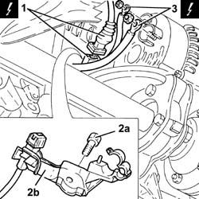
Applies to: engines: 1.9 JTD 8v ; all production periods
1. Unscrew the nuts on the alternator bolts.
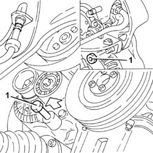
Applies to: engines: 1.9 JTD 8v ; all production periods
1. Undo bolts (1a) and remove the rear alternator mounting bracket (1b).
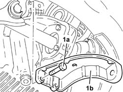
Applies to: engines: 1.9 JTD 8v ; all production periods
1. Unscrew nut (1a) securing the right side anti-roll bar joint to the lower fork and move bracket (1b) supporting ABS active sensor wiring (1c).
2. Unscrew nut (2a) and disconnect steering link (2b) from the right wheel strut using tool (2c).
 | Name | Country |
|---|---|---|
2c | Extractor | 1.821.169.000 |
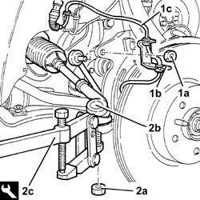
Applies to: engines: 1.9 JTD 8v ; all production periods
1. Unscrew the bolts securing the right drive shaft to the intermediate drive shaft.
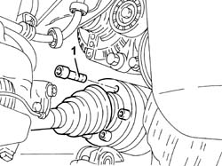
Applies to: engines: 1.9 JTD 8v ; all production periods
1. Disconnect the brake pipes from the support plate.
2. Undo the bolt securing the front suspension lower damper connection fork to the lower wishbone.
3. Remove the brake pipe mounting plate.
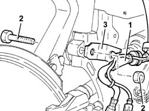
Applies to: engines: 1.9 JTD 8v ; all production periods
1. Undo nut (1a) and disconnect upper wishbone (1b) from the wheel strut using tool (1c).
| Name | Country |
|---|---|---|
1c | Extractor | 1.821.169.000 |
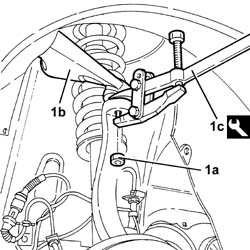
Applies to: engines: 1.9 JTD 8v ; all production periods
1. Undo bolt (1a) and remove the lower right fork connecting the front suspension damper to lower wishbone (1b).
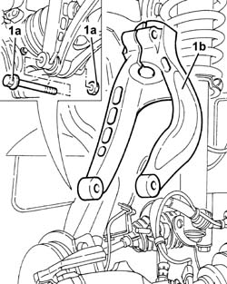
Applies to: engines: 1.9 JTD 8v ; all production periods
Remove the right drive shaft from the intermediate drive shaft.
1. Undo the bolts (1a) and remove the intermediate drive shaft (1b).
2. Unscrew bolts (2a) and bolt (2b). Then remove intermediate drive shaft mount (2c).
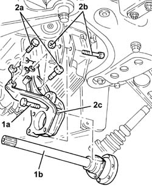
Applies to: engines: 1.9 JTD 8v ; all production periods
1. Undo the bolts and remove the alternator.
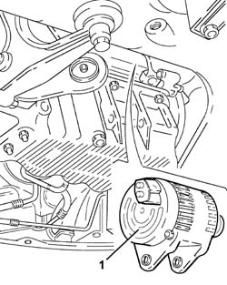
Applies to: engines: 1.9 JTD 8v ; all production periods
1. Disconnect the electrical connection from the engine oil pressure warning light switch.
| Name | Connector |
|---|---|---|
- | Engine oil pressure sensor |
2. Remove the engine oil pressure warning light switch.
3. Undo the bolts securing the pressure pump mounting to the cylinder block.
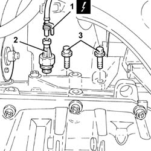
Applies to: engines: 1.9 JTD 8v ; all production periods
Lower the vehicle.
1. Undo the front bolts securing the pressure pump mounting to the air chamber.
2. Undo the upper bolts securing the pressure pump mounting to the cylinder block.
3. Remove the pressure pump mounting.
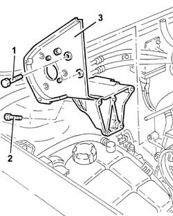
Applies to: engines: 1.9 JTD 8v ; all production periods
Refitting
RemovingFit the pressure pump mounting and tighten the bolts to the specified torque.
 | Fastening | Component | Ø | Value (daNm) |
|---|---|---|---|---|
- | Bolt | INJECTION PRESSURE PUMP SUPPORT | M6 | Crankcase side 2.6 - 3.2 |
| Fastening | Component | Ø | Value (daNm) |
|---|---|---|---|---|
- | Bolt | INJECTION PRESSURE PUMP SUPPORT | M8 | Intake manifold side 2.1 - 2.6 |
Fit the engine oil pressure warning light switch and tighten it to the recommended torque.
| Fastening | Component | Ø | Value (daNm) |
|---|---|---|---|---|
- | - | OIL PRESSURE W/L | M14 | 1.9 - 2.3 |
Fit the alternator and support with bolts.
1. Fit intermediate drive shaft (1a) and secure it by means of screws (1b) and bolt (1c).
2. Fit intermediate drive shaft (2a) and secure it by tightening bolts (2b) to the recommended torque.
| Fastening | Component | Ø | Value (daNm) |
|---|---|---|---|---|
2b | Bolt | INTERMEDIATE DRIVE SHAFT | M8 | 2.5 - 2.8 |
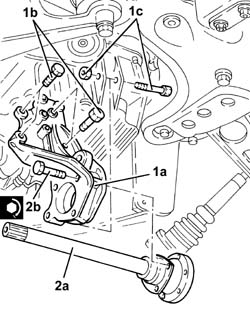
Applies to: engines: 1.9 JTD 8v ; all production periods
1. Fit lower right hand fork (1a) connecting the front suspension damper to the lower wishbone and secure by tightening bolt (1b) to the specified torque.
| Fastening | Component | Ø | Value (daNm) |
|---|---|---|---|---|
1b | Bolt | FRONT DAMPER FORK ON WISHBONE | M12 | (Lower track control arm side) 10.8 ÷ 13.2 |
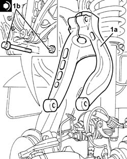
Applies to: engines: 1.9 JTD 8v ; all production periods
Connect the upper wishbone to the wheel strut and secure by tightening the nut to the specified torque.
| Fastening | Component | Ø | Value (daNm) |
|---|---|---|---|---|
- | Nut | FRONT SUSPENSION TOP LEVER | M10 | 4.3 - 4.7 |
Connect the upper wishbone to the wheel strut and secure by tightening the nut to the specified torque.
| Fastening | Component | Ø | Value (daNm) |
|---|---|---|---|---|
- | Bolt | FRONT DAMPER FORK ON WISHBONE | M12 | 8.1 - 8.9 |
As an old solution, tighten the new bolts securing the right half shaflt to the intermediate half shaft to the specified torque.
| Fastening | Component | Ø | Value (daNm) |
|---|---|---|---|---|
- | Bolt | FRONT DRIVE SHAFT COMPLETE WITH JOINTS | M8 | (Int. diff./ intermediate. driveshaft. side.) 3.6 ÷ 4.4 |
As a new solution, tighten the new bolts securing the right half shaft to the intermediate shaft to the specified torque.
| Fastening | Component | Ø | Value (daNm) |
|---|---|---|---|---|
- | Bolt | FRONT DRIVE SHAFT COMPLETE WITH JOINTS | M10 | (Diff. internal./ intermediate. shaft. driveshaft.) side 5.0 ÷ 6.1 |
Connect the steering link to the wheel strut and secure by tightening the nut to the specified torque.
| Fastening | Component | Ø | Value (daNm) |
|---|---|---|---|---|
- | Nut | ADJUSTABLE STEERING LINKS | M14 | 2.9 - 3.6 |
Refit the ABS active sensor wiring bracket. Then tighten the nut securing the joint between anti-roll bar and lower fork to the specified torque.
| Fastening | Component | Ø | Value (daNm) |
|---|---|---|---|---|
- | Nut | FRONT ANTI-ROLL BAR JOINTS | M10 | 3.8 - 4.7 |
Fit the alternator rear bracket and secure it with bolts.
Tighten the alternator bolts to the recommended torque.
| Fastening | Component | Ø | Value (daNm) |
|---|---|---|---|---|
- | Bolt | ALTERNATOR ASSEMBLY | M10 | 4.3 - 5.3 |
| Fastening | Component | Ø | Value (daNm) |
|---|---|---|---|---|
- | Bolt | ALTERNATOR ASSEMBLY | M12 | 6.0 - 7.4 |
Connect the electrical connections to the alternator.
Place the electrical wiring mounting bracket back in its seating and tighten the bolt.
Connect the electrical connection for the rpm sensor.
Lower the vehicle.
1060E30 pressure pump pulley - r r
1084A16 oil dip stick pipe - r r
1092A12 crankshaft pulley - r+r for versions with air conditioner
1092G10 single engine belt r r
7055B64 Engine compartment DUST shield in front wheel arch (one), left or right - R.R.
4450B10 Front WHEEL (one) - R.R.
1008C14 engine link bracket - r r
Applies to: engines: 2.4 JTD 10v; all production periods
Removing
Refitting4450B10 Front WHEEL (one) - R.R.
7055B64 Engine compartment DUST shield in front wheel arch (one), left or right - R.R.
1092G10 single engine belt r r
1092A12 crankshaft pulley - r+r for versions with air conditioner
1032D12 timing system protective cover(s) - r + r
1008C10 power unit upper reaction link r r .
1016A10 sound-proofing cover - r + r .
1008C14 engine link bracket - r r
1060E30 pressure pump pulley - r r
Raise the car on the lift.
1. Undo the lower bolt for the engine oil dipstick pipe.
Lower the vehicle.
2. Undo top bolt (2a) and remove engine oil dipstick tube (2b).
3. Undo bolts (3a) and remove pressure pump mount (3b).
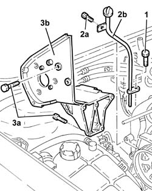
Applies to: engines: 2.4 JTD 10v; all production periods
Refitting
RemovingFit the pressure pump mount and secure by tightening bolts to the specified torque.
| Fastening | Component | Ø | Value (daNm) |
|---|---|---|---|---|
- | Bolt | INJECTION PRESSURE PUMP SUPPORT | M6 | Crankcase side 2.6 - 3.2 |
| Fastening | Component | Ø | Value (daNm) |
|---|---|---|---|---|
- | Bolt | INJECTION PRESSURE PUMP SUPPORT | M8 | Intake manifold side 2.1 - 2.6 |
Fit the engine oil dipstick and fix it using the bolts.
Raise the vehicle.
Tighten the lower bolt for the engine oil dipstick.
Lower the vehicle.
1060E30 pressure pump pulley - r r
1008C14 engine link bracket - r r
1016A10 sound-proofing cover - r + r .
1008C10 power unit upper reaction link r r .
1032D12 timing system protective cover(s) - r + r
1092A12 crankshaft pulley - r+r for versions with air conditioner
1092G10 single engine belt r r
7055B64 Engine compartment DUST shield in front wheel arch (one), left or right - R.R.
Applies to: engines: 1.9 JTD 16v; all production periods
Removing
RefittingPosition the vehicle on the ramp
Proceed with removal 1016A10 sound-proofing cover - r + r
Ensure that the ignition key is in the OFF position, then disconnect the negative battery terminal (-).
| Name | Connector |
|---|---|---|
- | Battery |
Proceed with removal 1008C10 power unit upper reaction link r r
Proceed with removal 1060G80 ds electric injection control unit - r r
Proceed with removal 4450B04 right front wheel r r
Proceed with removal 7055B54 under-engine guard - r r
Proceed with removal - 7055B91 Right front WHEEL ARCH LINER - R.R.
Proceed with removal 1092G10 single engine belt r r
Proceed with removal 1092A10 Crankshaft services PULLEY - R.R.
Proceed with removal 1092G20 engine component single belt fixed tensioner - one - r + r
Proceed with removal 1032D12 timing system protective cover(s) - r + r
Proceed with removal 1032B10 toothed timing belt - r + r for timing adjustment or replacement
Proceed with removal 1060E10 pressure pump - r r
1. Disconnect the electrical connections from the heater plugs.
| Name | Connector |
|---|---|---|
1 | Heater plug |
2. Release the electrical wiring from the bands and move it.
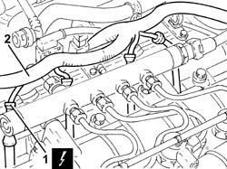
Applies to: engines: 1.9 JTD 16v; all production periods
1. Loosen the band and disconnect the coolant return pipe from the engine coolant reservoir, thermostat side.
2. Loosen the band and disconnect the coolant outlet pipe from the cylinder head, engine coolant return pipe to the coolant reservoir side.
3. Loosen the band and disconnect the flexible coolant return pipe from the rigid coolant return pipe to the engine coolant reservoir.
4. Undo the bolts (4a) and remove hose (4b) carrying coolant to the coolant supply reservoir.
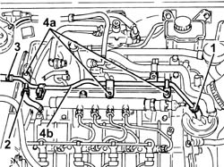
Applies to: engines: 1.9 JTD 16v; all production periods
1. Undo the bolts (1a) and remove the power steering pump drive pulley (1b).
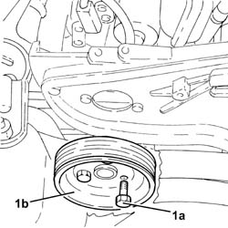
Applies to: engines: 1.9 JTD 16v; all production periods
1. Undo the bolts securing the power steering pump to its mounting.
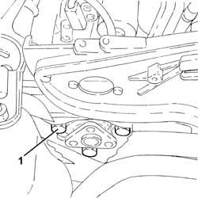
Applies to: engines: 1.9 JTD 16v; all production periods
Remove the guide tube complete with engine oil dipstick.
1. Undo the bolts (1a) and remove the pressure pump mounting (1b).
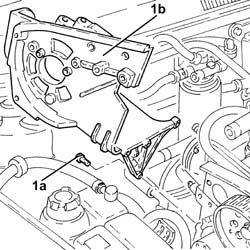
Applies to: engines: 1.9 JTD 16v; all production periods
Refitting
Removing1. Place the pressure pump mounting (1a) back in its housing and fix it tightening the bolts (1b) to the recommended torque.
| Fastening | Component | Ø | Value (daNm) |
|---|---|---|---|---|
1b | Bolt | INJECTION PRESSURE PUMP MOUNT | M8 | (Engine crankcase side) 2.3 ÷ 2.8 |
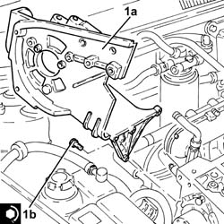
Applies to: engines: 1.9 JTD 16v; all production periods
Refit the guide tube and engine oil dipstick.
1. Place the power assisted steering pump back in its housing and fix it tightening the bolts to the recommended torque.
| Fastening | Component | Ø | Value (daNm) |
|---|---|---|---|---|
1 | Bolt | POWER STEERING PUMP | M8 | (Support side) 2.3 ÷ 2.8 |
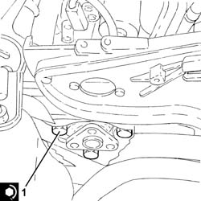
Applies to: engines: 1.9 JTD 16v; all production periods
1. Place the power assisted steering pump pulley (1a) back in its housing and fix it tightening the bolts (1b) to the recommended torque.
| Fastening | Component | Ø | Value (daNm) |
|---|---|---|---|---|
1b | Bolt | POWER STEERING PUMP DRIVE PULLEY | M8 | (Power assisted steering pump side 23 28 |
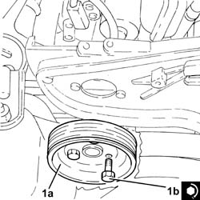
Applies to: engines: 1.9 JTD 16v; all production periods
Place the coolant return pipe to the engine cooling system reservoir back in its housing and fix it using the bolts.
Connect the flexible pipe to the coolant return pipe to the engine coolant reservoir and tighten the band.
Connect the coolant oulet pipe from the cylinder head, engine coolant return pipe to the supply reservoir side and tighten the band.
Connect the engine coolant return pipe to the supply reservoir, thermostat side and tighten the band.
Place the electrical wiring back in its seating and fix it to the bands.
Connect the electrical connections to the heater plugs.
Proceed with refitting 1060E10 pressure pump - r r
Proceed with refitting 1032B10 toothed timing belt - r + r for timing adjustment or replacement
Proceed with refitting 1032D12 timing system protective cover(s) - r + r
Proceed with refitting 1092G20 engine component single belt fixed tensioner - one - r + r
Proceed with refitting 1092A10 Crankshaft services PULLEY - R.R.
Proceed with refitting 1092G10 single engine belt r r
Proceed with refitting - 7055B91 Right front WHEEL ARCH LINER - R.R.
Proceed with refitting 7055B54 under-engine guard - r r
Proceed with refitting 4450B04 right front wheel r r
Proceed with refitting 1060G80 ds electric injection control unit - r r
Proceed with refitting 1008C10 power unit upper reaction link r r
Connect the negative (-) battery terminal
Proceed with refitting 1016A10 sound-proofing cover - r + r
Remove the car from the ramps.
Applies to: engines: 2.4 JTD 20v; all production periods
Removing
RefittingPosition the vehicle on the ramp.
Proceed with removal 4450B04 right front wheel r r .
Proceed with removal 7055B54 under-engine guard - r r .
Proceed with removal - 7055B91 Right front WHEEL ARCH LINER - R.R. .
Proceed with removal - 7055B66 Engine compartment DUST SHIELD protection in right front wheel arch - R.R. .
Proceed with removal 1092G10 single engine belt r r .
Proceed with removal 1092A10 Crankshaft services PULLEY - R.R. .
Proceed with removal 1092G21 engine component single belt fixed tensioner - r rwith belt removed .
Proceed with removal 1016A10 sound-proofing cover - r + r .
Proceed with removal 1008C10 power unit upper reaction link r r .
Proceed with removal 1032D12 timing system protective cover(s) - r + r .
Proceed with removal 1032B10 toothed timing belt - r + r for timing adjustment or replacement .
Proceed with removal 1060E30 pressure pump pulley - r r .
Proceed with removal 1060E10 pressure pump - r r .
Proceed with removal 1060G70 vacum tank for controlling engine air intake r r .
Proceed with removal 1080D34 engine oil vapour separator - r + r .
Proceed with removal 1084A16 oil dip stick pipe - r r .
1. Undo the bolts securing the rigid coolant return pipe to the coolant supply reservoir.
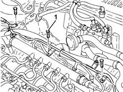
Applies to: engines: 2.4 JTD 20v; all production periods
1. Undo the bolts (1a) and remove the power steering pump drive pulley (1b).
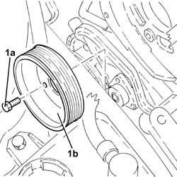
Applies to: engines: 2.4 JTD 20v; all production periods
1. Undo the bolts fixing the power assisted steering pump and move it back as far as necessary.
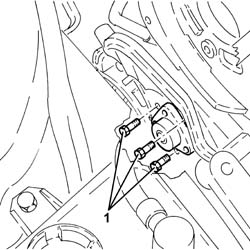
Applies to: engines: 2.4 JTD 20v; all production periods
1. Undo the bolts (1a) and remove the pressure pump mounting (1b).
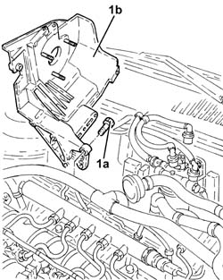
Applies to: engines: 2.4 JTD 20v; all production periods
Refitting
Removing1. Place the pressure pump mounting (1a) back in its housing and fix it tightening the bolts (1b) to the recommended torque.
| Fastening | Component | Ø | Value (daNm) |
|---|---|---|---|---|
1b | Bolt | INJECTION PRESSURE PUMP MOUNT | M8 | (Engine crankcase side) 2.3 ÷ 2.8 |
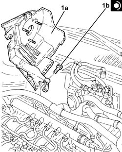
Applies to: engines: 2.4 JTD 20v; all production periods
1. Place the power assisted steering pump back in its housing and fix it tightening the bolts to the recommended torque.
| Fastening | Component | Ø | Value (daNm) |
|---|---|---|---|---|
1 | Bolt | POWER STEERING PUMP | M8 | (Support side) 2.3 ÷ 2.8 |
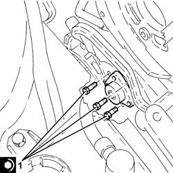
Applies to: engines: 2.4 JTD 20v; all production periods
1. Place the power assisted steering pump pulley (1a) back in its housing and fix it tightening the bolts (1b) to the recommended torque.
| Fastening | Component | Ø | Value (daNm) |
|---|---|---|---|---|
1b | Bolt | POWER STEERING PUMP DRIVE PULLEY | M8 | (Power assisted steering pump side) 2.3 ÷ 2.8 |
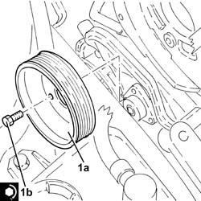
Applies to: engines: 2.4 JTD 20v; all production periods
Undo the bolts securing the rigid coolant return pipe to the coolant supply reservoir.
Proceed with refitting 1084A16 oil dip stick pipe - r r .
Proceed with refitting 1080D34 engine oil vapour separator - r + r .
Proceed with refitting 1060G70 vacum tank for controlling engine air intake r r .
Proceed with refitting 1060E10 pressure pump - r r .
Proceed with refitting 1060E30 pressure pump pulley - r r .
Proceed with refitting 1032B10 toothed timing belt - r + r for timing adjustment or replacement .
Proceed with refitting 1032D12 timing system protective cover(s) - r + r .
Proceed with refitting 1008C10 power unit upper reaction link r r .
Proceed with refitting 1016A10 sound-proofing cover - r + r .
Proceed with refitting 1092G21 engine component single belt fixed tensioner - r rwith belt removed .
Proceed with refitting 1092A10 Crankshaft services PULLEY - R.R. .
Proceed with refitting 1092G10 single engine belt r r .
Proceed with refitting - 7055B66 Engine compartment DUST SHIELD protection in right front wheel arch - R.R. .
Proceed with refitting - 7055B91 Right front WHEEL ARCH LINER - R.R. .
Proceed with refitting 7055B54 under-engine guard - r r .
Proceed with refitting 4450B04 right front wheel r r .
Remove the car from the ramps.
Topics linked from this page (26)
- 1008C10 power unit upper reaction link r r
- 1008C14 engine link bracket - r r
- 1016A10 sound-proofing cover - r + r
- 1032B10 toothed timing belt - r + r for timing adjustment or replacement
- 1032B14 toothed timing belt - r + r for timing adjustment or replacement versions with air conditioner
- 1032D12 timing system protective cover(s) - r + r
- 1060E10 pressure pump - r r
- 1060E30 pressure pump pulley - r r
- 1060G70 vacum tank for controlling engine air intake r r
- 1060G80 ds electric injection control unit - r r
- 1080D34 engine oil vapour separator - r + r
- 1084A16 oil dip stick pipe - r r
- 1092A10 Crankshaft services PULLEY - R.R.
- 1092A12 crankshaft pulley - r+r for versions with air conditioner
- 1092G10 single engine belt r r
- 1092G20 engine component single belt fixed tensioner - one - r + r
- 1092G21 engine component single belt fixed tensioner - r rwith belt removed
- 4450B04 right front wheel r r
- 4450B10 Front WHEEL (one) - R.R.
- 7055B54 under-engine guard - r r
- 7055B64 Engine compartment DUST shield in front wheel arch (one), left or right - R.R.
- A1B Battery ( BATTERY NEGATIVE )
- A10 Alternator
- A40 Heater plug
- K30 Engine oil pressure sensor (switch)
- K46 Rpm sensor